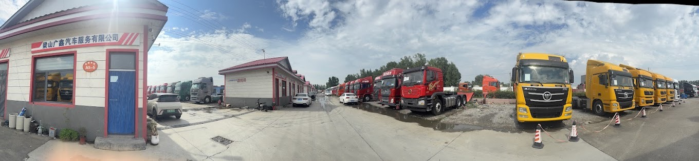

从废铁到机皇
梁山商用二手车出口非洲——逆向物流、再制造工程与中国企业全球化
在中国，一辆跑了十年、满身创伤的重型自卸车，通常只值废铁价——压称卖给拆解厂，或在停车场悄然锈蚀。然而在山东省梁山县的二手车市场里，这些车辆正经历一次彻底的价值重构：经过再制造技术的"大换血"，它们以原价三分之一的代价，驶向尼日利亚的建设工地、坦桑尼亚的矿山公路、肯尼亚的货运干线。在那里，它们被客户尊称为"机皇"。
梁山是一个无港口、无铁路枢纽的内陆县城，却凭借全国最大的专用车产业集群和系统化的再制造能力，将商用二手车出口做到全国县域第一——2023 年出口额突破 7500 万美元，同比增长 204%。本案例以梁山三家代表性企业（蜗牛货车网、蚂蚁汽车、诚川汽车）为主线，呈现中国商用二手车"走出去"的不同路径，并聚焦产业面临的结构性挑战：非洲各国车龄限制趋严、质量信誉风险积累、日本二手车竞争加剧。学生将被要求从全球化战略、逆向物流效率和再制造工程三个维度，分析梁山模式的可持续性，并为产业的下一步发展提出建议。
一水泊之地，车轮为帆
提到梁山，多数中国人的第一反应是《水浒传》里那片浩淼的水泊。然而现实中的梁山县，坐落于山东省西南黄河冲积平原，平坦干旱，没有深水良港，也没有铁路枢纽。2019年之前，这里在物流地图上几乎是一个空白。
改变从制造业开始。1980 年代起，这片土地逐渐成为全国最重要的专用汽车生产基地：半挂车、自卸车、罐车、冷藏车……到 2024 年，梁山集聚了整车制造企业 142 家、零配件企业 380 家，年产能达到专用汽车 35 万辆，本地配套率高达 65%。这意味着在梁山，一辆重型卡车从底盘到轮毂几乎可以全部在本地找到零件供应商。
专用车产业的聚集，带来了一个意料之外的副产品：规模庞大的二手商用车市场。工厂生产的是新车，但每年有无数辆旧车在这里完成最后的交易——这片"车轮的终点"，成了另一个故事的起点。
2019 年，中国正式启动二手车出口试点政策，梁山迅速抓住机遇。政府随即设立"专班"推动出口：商务局、海关、外管局、金融保险机构协同，打通从整备到出口退税的全流程。16 家企业率先取得出口资质。同年，蜗牛货车网送出第一批货柜——目的地：坦桑尼亚达累斯萨拉姆港。
从那时起，梁山的出口曲线几乎只画了一个方向：向上。
二废铁的第二次生命——逆向物流如何创造价值
梁山的生意，本质上是一条逆向供应链：货物的起点不是工厂，而是各地的报废场、事故处理中心和换代更新的运输公司。
货源主要来自三类：其一，国内货运公司完成使用周期（通常 8—12 年）后置换下来的旧车；其二，大基建时代工程结束后闲置的工程车辆；其三，保险公司定损后认定"修复成本高于残值"的事故车。这些车辆进入梁山市场时，往往按吨位计算价格——字面意义上的废铁价。
然而，出口企业的核心能力在于一套严格的筛选与再制造体系，将废铁价的输入转化为"接近新车底气"的输出。以蜗牛货车网的操作流程为例：
其中，发动机再制造是整个价值链中技术含量最高、也最能决定出口品质上限的环节。与简单"翻新"（清洗、喷漆、换易损件）不同，再制造要求将发动机完全拆解后，逐一对零件进行探伤检测，按新机标准重新选配、装配，并经过热磨合测试。最终产品在理论上应具备与原型新品相当的动力输出。
"底盘开裂？不收。缸体有裂纹？不收。重大事故车？碰都不碰。" ——蜗牛货车网质检负责人
这套体系的经济账是：再制造成本约为新机的 50%，但在买家眼中，再制造发动机的可靠性与新机差距并不显著——尤其是在非洲对车辆精密度要求远低于欧洲的使用环境中。
四重质检流程依次为：底盘调校 → 变速箱验证 → 实车路试 → 整车淋水测试（检验密封性）。只有全部通过，车辆才进入装柜程序。
三非洲：粗粮胃口的大市场
梁山的二手车为什么卖到非洲，而不是东南亚或南美？答案需要从非洲买家的使用场景出发来理解。
撒哈拉以南非洲正经历持续的基础设施建设热潮。大量道路、矿山、建筑工地需要重型商用车——但多数买家是中小企业主，无力承担新车的首付+融资成本。与此同时，非洲的道路条件十分严苛：土路、碎石路、雨季泥泞，加上超载运营是普遍现象，对车辆的要求是"耐造"而非"精密"。
这恰好与中国"国二"、"国三"排放标准的商用车特点高度匹配。这些车辆在国内因排放法规升级而被强制淘汰，但其发动机扭矩大、结构简单、维修门槛低——最后一点在非洲尤为关键：路边小作坊的工人，拿着扳手和经验，就能完成大部分维修，无需等待专业技师。
"中国卡车的发动机劲大、耐跑，能够适应非洲复杂的泥泞路况。" ——密斯特（Mister），尼日利亚客商
与最主要的竞争对手——日本二手车——相比，梁山车的核心优势不是质量，而是适配性和配件可及性。日本二手车品质确实更高，但价格是梁山车的两到三倍；更重要的是，日本车的零部件需要专程进口，出故障可能趴窝半个月。而中国品牌零件在非洲市场的供应链已相当完善——当地大街小巷都能找到中国品牌零件，维修成本和等待时间远低于日本车。
非洲买家的理性计算是：用一台日本二手车的价格，买两台中国二手车，一台运营赚钱，另一台备着拆配件。这不是无奈，这是当地市场的商业逻辑。
四三家企业，三种路径
面对同一片市场，梁山的出口企业选择了不同的竞争战略。以下三家企业最具代表性：
三种路径代表了二手车出口行业三个不同的护城河来源：规模与技术（蜗牛）、品牌认证（蚂蚁）、信任资产（诚川）。在市场规范程度低、信息不对称严重的跨境二手车领域，这三种护城河各有其适用场景，也各有其脆弱性。
梁山全县 16 家有出口资质的企业，在政府专班的协助下共享了一项关键基础设施成果：通关效率的大幅提升——从"一车一证"改为"一批一证"，单车过关时间压缩至 10 分钟，出口总周期从三个月缩短至两个月以内。这一体制改革是梁山集群优势的重要组成部分，单家企业若独立运营，几乎无法享有同等的制度便利。
五危机的多重面孔
快速增长背后，梁山的二手车出口产业正积累几个不容忽视的结构性风险。
政策收紧：非洲多个核心市场相继收紧二手车进口的车龄门槛。肯尼亚、坦桑尼亚等国均已或正在讨论将可进口车辆的最大车龄从 15 年压低至 8—10 年。梁山目前大量收购的 10—15 年车龄车辆，一旦政策落地，将直接被挡在门外，倒逼企业只能收购更新、也更贵的车源，利润空间随之收窄。
质量信誉风险：部分出口企业为控制成本、追求出货量，整备标准低于行业均值。一旦出现集中性故障，不仅损害个别企业声誉，还会波及"梁山货"的整体口碑。在非洲买家判断力尚不充分的市场里，品类声誉一旦形成负面印象，修复成本极高。
竞争格局变化：日本二手重卡通过东南亚、中东转口，正在以更快的速度进入东非市场。与中国车相比，日本车的整体翻新标准更高，在高端客户（大型物流公司、矿业企业）中具备更强的议价权。梁山出口企业若长期定位于低价区间，将面临品牌向上突破的玻璃天花板。
内部成本压力：再制造工人的熟练技工短缺，工资每年上涨约 15—20%；优质低车龄车源竞争激烈，收购价格持续抬升。"低价输入 + 精修输出"的商业模式，其利润空间正在被双向挤压。
六下一步怎么走？
面对上述压力，梁山出口产业的下一步战略选择，在业内形成了三种明显的路线分歧：
如果你是梁山龙头企业的决策者，你会选择哪条路？
路径 A · 规模深化
聚焦现有模式，做大出口规模
- 收购更新车龄（6—8年）的车源
- 扩产再制造产线，拉低单台成本
- 抢在政策收紧前完成市场份额卡位
风险：更新车源成本更高，政策风险未根本解决
路径 B · 品质升级
建立标准化再制造认证品牌
- 申请国家再制造认证，打造品牌溢价
- 在非洲建立售后服务网络和品牌授权
- 向中高端买家（大型矿业、物流企业）转型
风险：建设期 18—24 个月，初期投资大，短期利润下滑
路径 C · 新赛道切入
进军新能源二手车出口
- 收购国内退役纯电动商用车（运营 3—4 年）
- 车龄新，符合非洲进口政策
- 利用已有渠道快速铺货
风险：非洲充电基础设施极度缺乏，市场接受度未知
三条路径对应三种不同的增长逻辑，所需能力、资本投入和时间窗口各不相同，且并非完全互斥——但资源有限，必须做出优先级判断。
讨论五个问题
请在阅读案例全文和附件后，围绕以下问题准备你的观点。讨论将从逆向物流、全球化路径、再制造工程三个分析框架展开。
- 问题 1｜逆向物流：废铁变现的价值逻辑 梁山的商业模式将"废弃物"转化为可出口商品，价值创造发生在哪些具体环节？哪个环节是最难被模仿的核心竞争力？如果你是一家想进入梁山市场的外地企业，最大的进入壁垒是什么？
- 问题 2｜中国企业全球化：梁山模式属于哪种路径？ 与华为（技术驱动）、比亚迪（品牌驱动）等中国企业的出海路径相比，梁山二手车出口代表了怎样一种全球化逻辑？它的可持续性依赖于哪些条件？条件一旦改变，模式会如何演变？
- 问题 3｜再制造 vs 翻新：边界在哪里？ 案例中提到发动机"再制造"，但现实中不同企业的操作差异很大。你如何判断一辆出口车是真正的"再制造"还是简单"翻新"？如果梁山要建立可信的再制造认证体系，需要解决哪些核心问题？
- 问题 4｜政策压力：车龄限制是威胁还是机遇？ 非洲多国收紧车龄限制，表面上是对梁山模式的打击，但从另一个角度，它可能倒逼产业升级。你认为车龄限制对梁山三类企业（蜗牛、蚂蚁、诚川）的影响程度是否相同？这一政策变化对"先行者"和"后来者"的影响有何差异？
- 问题 5｜战略选择：路径 A、B、C，你选哪条？ 面对案例第六节中的三条战略路径，假设你是一家年出口量 500 台、有 3000 万元可用于战略投资的中型梁山企业，你会优先选择哪条路径？需要补充哪些关键信息才能做出决定？如果你是地方政府产业政策制定者，你会如何引导产业选择？
梁山商用二手车出口产业关键时间节点
发动机再制造核心流程与关键控制点
| 阶段 | 主要操作 | 关键控制点 | 结果标准 |
|---|---|---|---|
| 进场初检 | 底盘、缸体外观检查；发动机启动测试 | 底盘裂纹、缸体裂纹、事故车判定 | 不达标 → 直接退货/报废 |
| 完全拆解 | 发动机完整拆解至零部件级别 | 拆解记录、零件编号管理 | 零件分类入库检测 |
| 探伤检测 | 磁粉探伤、超声波检测关键受力件 | 曲轴、连杆、缸体裂纹检出 | 不合格件 → 报废，不进入再制造流程 |
| 磨损件更换 | 按新机标准更换活塞环、轴承、密封件等 | 配件来源、规格匹配 | 达到新机装配公差标准 |
| 按新机标准装配 | 扭矩控制、间隙检测 | 装配工艺规范执行 | 装配精度满足原厂规范 |
| 热磨合测试 | 空载 + 负载热磨合；记录转速、温度、爬坡能力 | 稳定性、温升异常 | 全指标合格 → 进入整车整备 |
| 整车四重质检 | 底盘 → 变速箱 → 实车路试 → 淋水密封测试 | 整车综合性能 | 全部通过 → 装柜出口 |
注：上述为标杆企业（如蜗牛货车网）的流程；行业内不同企业在"拆解深度"和"检测标准"上存在显著差异，这是导致出口产品质量参差不齐的根本原因。
非洲市场：梁山二手车 vs 日本二手车 vs 中国新车
| 维度 | 梁山中国二手车 | 日本二手车 | 中国新车 |
|---|---|---|---|
| 价格（相对基准） | 1×（基准价） | 约 2.5—3× | 约 1.8—2× |
| 零配件价格 | 极低，非洲满街可买 | 贵，需海运进口 | 中等，逐步普及 |
| 路边维修便利性 | 高（结构简单，工人熟悉） | 低（精密系统，需专业设备） | 中 |
| 粗放使用适应性 | 强（超载、泥泞路设计耐受性高） | 中 | 中 |
| 整体质量稳定性 | 参差不齐（取决于整备标准） | 高（整备标准统一） | 高（新车） |
| 车龄政策合规性 | 风险：10—15 年车龄面临政策压力 | 中等（部分也存在车龄问题） | 无问题 |
| 高端客户吸引力 | 低（品牌认知不足） | 高 | 中（快速提升） |
| 一站式配套采购 | 强（梁山专用车 + 配件一站式） | 弱 | 中 |
梁山县商用二手车出口额增长数据
| 年份 | 出口额（万美元） | 同比增长 | 备注 |
|---|---|---|---|
| 2022年 | 2,465 | +113.2% | 快速起飞期，新冠后基建需求释放 |
| 2023年 | 7,503.75 | +204% | 爆发期；超越 7000 万美元门槛；县域第一 |
| 2024年（1—11月） | 6,978.78 | +31.66% | 增速回落，但绝对量仍在高位；政策压力显现 |
蜗牛货车网单家数据：2023年（1—11月）出口 3,616 台；2024年（1—11月）出口 5,799 台，增长 60.4%，累计（2019—2024）出口超 1.2 万台，累计出口额 1.5 亿美元。
三种战略路径：关键假设与风险结构对比
| 维度 | 路径 A：规模深化 | 路径 B：品质升级 | 路径 C：新能源切入 |
|---|---|---|---|
| 核心逻辑 | 以量取胜，摊薄成本 | 以质取胜，建立溢价 | 换赛道，规避政策压力 |
| 所需核心能力 | 供应链规模化、物流效率 | 认证体系、品牌建设、售后网络 | 新能源车辆鉴定、充电生态理解 |
| 前期投资 | 低（扩产线为主） | 高（认证+品牌+网络，约 3000 万+） | 中（新车源渠道开发） |
| 回报周期 | 短（12 个月内） | 长（18—36 个月） | 未知（取决于市场接受度） |
| 车龄政策抗压性 | 中（收购更新车龄，成本上升） | 高（再制造认证可能获豁免） | 高（新能源车车龄天然较新） |
| 质量风险敞口 | 大（规模扩张易牺牲标准） | 小（认证倒逼标准统一） | 未知（电动车在非洲使用经验为零） |
| 最大不确定性 | 政策变化时无差异化抵御 | 非洲买家的品牌溢价支付意愿 | 充电基础设施的铺设时间表 |